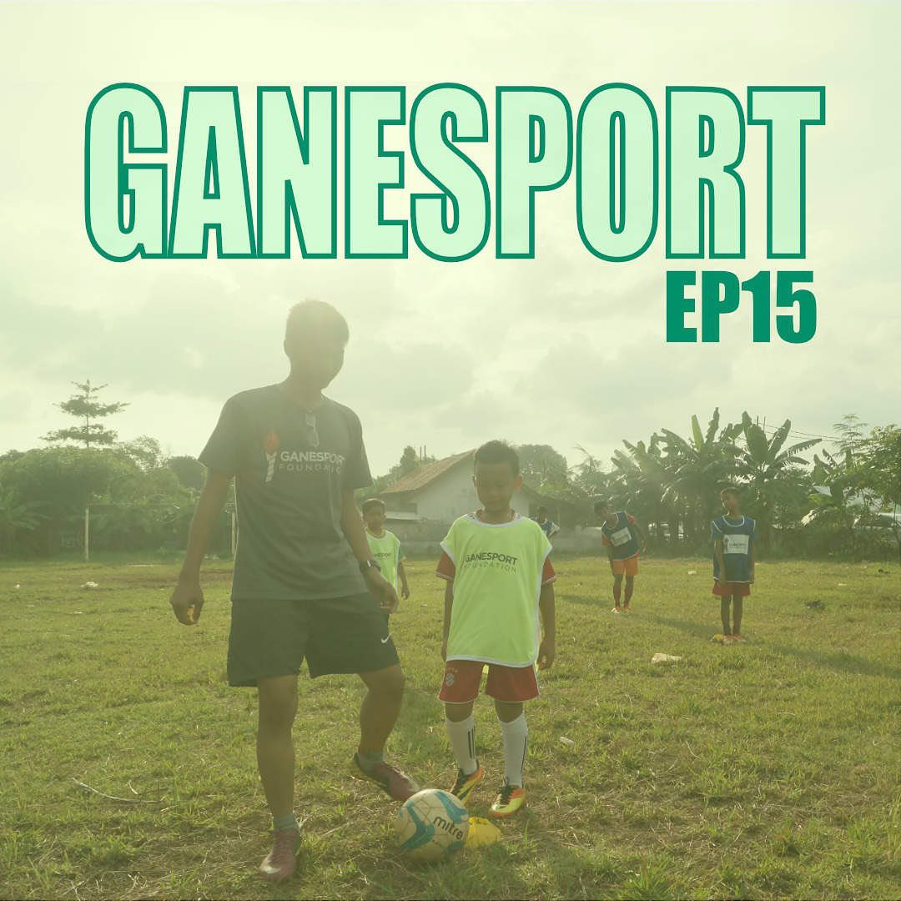

Black Athletes, Civil Rights and Political Protests
In our first full episode, we sit down with Prof. Louis Moore of Grand Valley State University to discuss the role that sport and athletes have played in political protests...
READ MOREOn Being a Semi-Professional Black Athlete
Joshua Akena is a Swedish athlete, who plays American Football for the Uppsala 86ers. Like Sweden's favourite son in recent years, Zlatan Ibrahimovic, he stands out both at home...
READ MORESports in the Age of the Climate Crisis
In this week's episode, we speak to Madeleine Orr, a leading light in the field of sport and environmental sustainability. Maddy speaks to us about sport's complex relationship, at best...
READ MORELabour Rights of Athletes and Elite Sports Existential Crisis
Are professional athletes simply employees who run a round a bit more than you and I? Do they have the same labour rights as "regular" workers? How has ability of the stakeholders...
READ MORESport and Politikspeak
Who will throw the knock-out punch in this year's U.S General Elections? The current P.O.T.U.S is up to his usual tricks, of playing the man not the ball, by calling political opponent Joe Biden...
READ MOREGender Diversity and Inclusion in Sport
Over the last few decades, societies all over the world (not all, obviosly) have come round to the long-overdue realization that you can be whatever you feel yourself to be. Compared to other areas...
READ MORESport and the F Word
"Let us then, by being allowed to take the same exercise as boys, not only during infancy, but youth, arrive at perfection of body, that we may know how far the natural superiority of man extends"...
READ MORE
Sports and Corruption
Corruption exists in each and every walk of life, and sport is certainly no exception to that rule. Rule-bending practices such as match-fixing, systematic doping and tax evasion has for centuries...
READ MOREThe Realities of being a Football Agent
On this week's very special episode, we speak to Mel Stein, President of the Association of Football Agents and one of the first English solicitors to be regarded as a specialist...
READ MORESport for Development: If you don’t know, now you know….
It's Christmas Eve, but we ain't letting you off that easily. Sport for Development (SFD) means a lot of things to a lot of different people, and yet, it's often associated with NGO work run by Global North...
READ MOREPalestine:Sports for Life
As 2020 finally draws to a close, we're wrapping up this tumultous year with yet another fantastic guest. This week, we speak to the founder of a Palestine-based sports for development NGO...
READ MORE
The EFDN: beyond the pitch
The "power of football" is something of a worn-out cliché, and sometimes feels like nothing more than a feel-good PR exercise. However, in the last few decades, football has been taken more...
READ MORE
"CITIUS, ALTIUS, FORTIUS" are the iconic words that continue to inspire a new generation of aspiring young athletes all over the world. Together with the five rings symbolizing the five continents...
READ MOREThe Modern Olympic Games Part I/a>
From its resumption following the end of WW2 up until the late 1980's, the Olympic Games simply weren't the Olympic Games without political boycotts. In total, there were 108 nation...
READ MORE

Ganesport
As Southeast Asia's largest and most populated country, Indonesia has made gigantic economic strides in recent years and is arguably the most mature democracy in the region..
READ MOREEU Athletes
Where do elite athletes turn to when they are treated unfairly by their employers? By that, we don't mean when Gareth Bale is being left out of the team or when Messi needs another hike in his wages...
READ MOREThe Paralympic Movement: a social history
“If I ever did one good thing in my medical career it was to introduce sport into the treatment and rehabilitation of disabled people”, are the famous words of Professor Sir Ludwig...
READ MORESports & Politics in the Western Balkans
In our first full episode, we sit down with Prof. Louis Moore of Grand Valley State University to discuss the role that sport and athletes have played in political protests and and ...
READ MORECoaches Across Continents
Thus far on the pod, we've had the great fortune of speaking to a number of passionate and forward-looking stakeholders in the field of Sport for Development, although none quite like our guests....
READ MORE
Slum Soccer
In our first full episode, we sit down with Prof. Louis Moore of Grand Valley State University to discuss the role that sport and athletes have played in political protests and and
READ MORE
Slum Soccer
In our first full episode, we sit down with Prof. Louis Moore of Grand Valley State University to discuss the role that sport and athletes have played in political protests and and
READ MORESlum Soccer